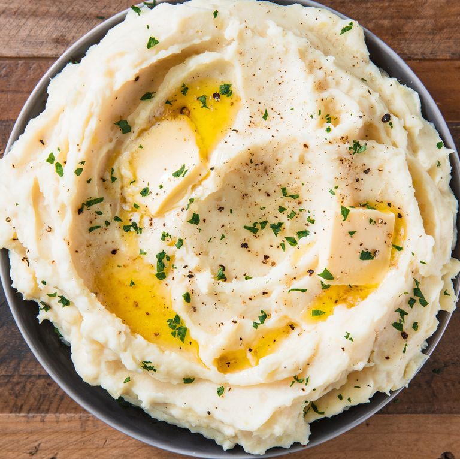

Mashed Potatoes

Perfect Mashed Potatoes
These perfect potatoes are perfectly creamy, and couldn't be easier to whip up for your staple Thanksgiving side or when you're simply craving some weekend comfort food.
Ingredients
- 3 lb. mixed potatoes, such as russets & Yukon Golds
- Kosher salt
- 1/2 c (1 stick) unsalted butter, plus 2 tablespoons for garnish
- 1/2 c. whole milk
- 1/2 c. sour cream
- Freshly ground black pepper
Steps
- In a large pot, cover potatoes with water and add a generous pinch of salt. Bring to a boil and cook until totally soft, 16 to 18 minutes. Drain and return potatoes to pot.
- Use a potato masher to mash potatoes until smooth.
- Meanwhile, in a small saucepan, melt butter with milk until warm.
- Pour over warm milk-butter mixture and stir until completely combined and creamy. Add sour cream and stir until combined.
- Season mashed potatoes generously with salt and pepper.
- Transfer potatoes to a serving bowl and top with remaining two tablespoons butter. Season with more pepper before serving.